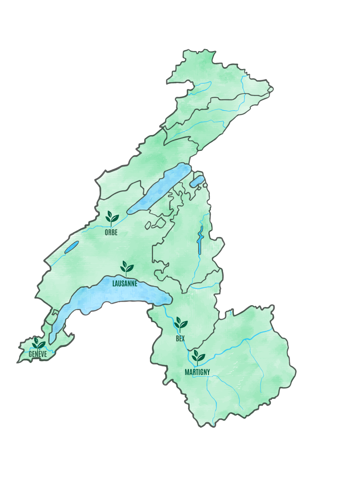

Semences de pays:
Semences de pays développe une production de semences reproductibles, rustiques et adaptées à une agriculture biologique proche des cycles de la nature, en collaboration avec les initiatives nourricières de proximité.
Nos semences:
Cucurbitacées
Potimarron français – Cucurbita maxima
Potimarron orange en forme de toupie au caractéristique goût de châtaigne. Le plus ancien potimarron débarqué sur le continent.
Semis:J F M
A M J J A S O N D
Récolte:J F M
A M J J A S O N D
Distance: 100 x 100cm
Fabacées
Haricot à rames Borlotto – Phaseolus vulgaris
Cette variété traditionnelle italienne de haricots à écosser aux gousses zébrées de rouge donne une belle récolte de graines de plusieurs couleurs.
Semis: J F M A
M J J A S O N D
Distance: Tous les 60 cm, disposer 6 à 8
graines en cercle.
Profondeur: 2cm
Fleurs
Bleuet Blauer Junge – Centaurea cyanus
Les délicats pétales de cette magnifique fleur des champs s'emploient pour embellir vos salades d'été et, séchés, dans des mélanges de tisanes.
Semis:J F
M A M J J A S O N D
Floraison: J F M A M
J J A S O N D
Découvrez nos trésors de biodiversité sur le shop!
Points de ventes:
Chez Mamie
Rue des Rois 17
1204 Genève
Ferme du Joran
Chemin des Philosophes 15
1350 Orbe
Le Topinambour
Avenue William-Fraisse 9
1006 Lausanne
Le Grainier
Route des Mines de Sel
1880 Bex
Nouvelle Terre
Rue du Grand-Verger 12
1920 Martigny